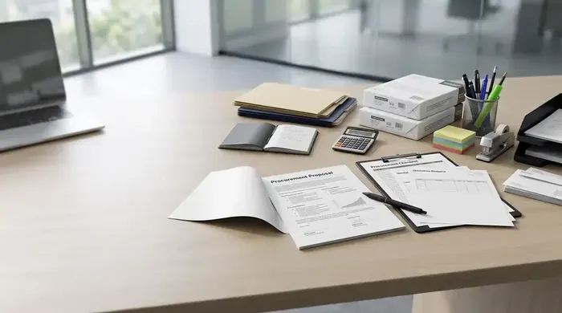

Pentingnya Memahami Format Pengajuan Pengadaan ATK dan Sarana Kantor
Format pengajuan pengadaan ATK adalah dokumen resmi yang memuat latar belakang kebutuhan, spesifikasi teknis barang, kuantitas, Rencana Anggaran Biaya (RAB), dan justifikasi pengadaan untuk memperoleh persetujuan direksi. Dokumen ini wajib melampirkan Surat Penawaran Harga (SPH) resmi, estimasi timeline serah terima (BAST), serta jaminan kepatuhan e-Faktur PPN 11% guna memastikan transparansi audit akuntansi perusahaan.
Bagi tim Purchasing dan General Affairs (GA), pengajuan anggaran sarana kantor sering kali menghadapi kendala birokrasi internal. Usulan pembelian ATK rutin maupun peremajaan inventaris seperti lemari arsip baja kerap tertunda atau dipangkas karena penyusunan dokumen proposal yang kurang sistematis, tidak memiliki dasar data konsumsi yang kuat, atau tidak menyertakan rincian spesifikasi teknis yang jelas.
Menguasai format pengajuan pengadaan ATK yang baku akan membantu purchasing officer menyajikan data secara persuasif, profesional, dan akuntabel di hadapan komite anggaran atau Direksi. Langkah ini juga selaras dengan pemilihan skema paket pengadaan alat tulis kantor terpadu yang mampu menekan total biaya kepemilikan barang.

Mengenal Keuntungan Sistem Paket Pengadaan Alat Tulis Kantor B2B
Pelajari bagaimana sistem paket bundling bulanan mampu memangkas beban administrasi dan mengunci stabilitas harga kontrak.
Struktur Baku Komponen Proposal Pengadaan ATK & Inventaris
Proposal pengadaan B2B yang solid wajib mencakup 11 elemen kunci yang menghubungkan aspek teknis, anggaran biaya, dan justifikasi operasional.
| Bagian Proposal | Isi yang Harus Dicantumkan | Tujuan | Dokumen Pendukung | Pihak yang Bertanggung Jawab |
|---|---|---|---|---|
| 1. Identitas Pengajuan | Nomor dokumen, tanggal, divisi pemohon, penanggung jawab | Registrasi administratif & tracking dokumen | Formulir Permintaan Internal (PR) | Divisi Pemohon / GA |
| 2. Latar Belakang | Kondisi stok saat ini, tren penambahan staf/divisi baru | Menjelaskan konteks dasar kebutuhan | Laporan Opname Stok Gudang | Purchasing / GA |
| 3. Tujuan Pengadaan | Target capaian (kelancaran cetak dokumen, kerapian arsip) | Menyelaraskan dengan sasaran kerja divisi | KPI / Program Kerja Divisi | Kepala Bagian Pemohon |
| 4. Daftar Kebutuhan | Kategori barang (Kertas, Toner, Ordner, Furniture) | Klasifikasi item pengadaan | Daftar Rekapitulasi Divisi | Purchasing Staff |
| 5. Spesifikasi Barang | Ukuran, gramatur, merek rujukan, material, warna | Menghindari salah beli barang tidak standar | Lembar Spesifikasi Teknis (TOR) | Tim Teknis / Purchasing |
| 6. Kuantitas | Jumlah unit, rim, pak, atau set yang dibutuhkan | Menetapkan volume belanja presisi | Data Rata-rata Konsumsi Bulanan | Purchasing Officer |
| 7. Estimasi Harga | Harga satuan terupdate dari vendor resmi | Memberikan gambaran nilai pasar riil | Surat Penawaran Harga (SPH) Vendor | Purchasing Officer |
| 8. Total Anggaran (RAB) | Subtotal biaya, PPN 11%, estimasi ongkos kirim | Penetapan plafon dana yang diajukan | Tabel Kalkulasi RAB Terperinci | Purchasing & Finance |
| 9. Justifikasi Pengadaan | Dampak risiko jika ditunda, efisiensi bundling B2B | Meyakinkan urgensi bagi pengambil keputusan | Analisis Cost-Benefit / Risiko | Manager GA / Purchasing |
| 10. Timeline Pengadaan | Jadwal submit PO, pengiriman, inspeksi QC, BAST | Menjamin kepastian waktu tiba barang | Schedule Matrix / Gantt Chart | Purchasing & Logistik |
| 11. Persetujuan (Approval) | Kolom tanda tangan pemohon, pemeriksa, penyetujui | Legalitas otorisasi pencairan anggaran | Lembar Pengesahan Direksi | General Manager / Direktur |

Format proposal yang rapi dan memuat data komparasi harga resmi vendor mempermudah manajemen keuangan dalam menyetujui anggaran operasional tanpa revisi berulang.

Panduan Memilih Supplier ATK Jakarta Terpercaya
Ketahui indikator legalitas PT, kelengkapan e-Faktur PPN, dan reputasi vendor sebelum mencantumkannya dalam proposal Anda.
Contoh Format Proposal Pengajuan yang Dapat Diadaptasi
Berikut adalah template proposal formal yang dapat disesuaikan dengan kebutuhan internal perusahaan atau instansi Anda (angka nominal harga yang tercantum di bawah ini semata-mata hanyalah ilustrasi format):
PROPOSAL PENGAJUAN PENGADAAN ATK & INVENTARIS KANTOR
Nomor: 042/PROP-GA/VIII/2026
Kepada Yth: Direktur Operasional & Keuangan PT Sinergi Nusantara
Dari: Departemen General Affairs & Procurement
Perihal: Pengajuan Anggaran Pengadaan ATK Triwulan III & Lemari Arsip
I. LATAR BELAKANG
Seiring bertambahnya 15 personel baru pada divisi Operasional serta meningkatnya volume pencetakan laporan bulanan, persediaan kertas HVS dan toner printer di gudang operasional telah mencapai titik minimum buffer stock. Selain itu, dokumen arsip kontrak klien memerlukan lemari penyimpanan baja berstandar keamanan tinggi guna mencegah kerusakan fisik.
II. TUJUAN
1. Menjamin ketersediaan perlengkapan administrasi kantor selama 3 bulan ke depan tanpa hambatan operasional.
2. Menata sistem pengarsipan dokumen legal dan akuntansi agar rapi, aman, dan mudah diakses saat audit.
III. RINCIAN KEBUTUHAN & ESTIMASI ANGGARAN (ILUSTRASI)
Berdasarkan Surat Penawaran Harga (SPH) resmi dari vendor rekanan PT Maroon ATK, rincian pengadaan diusulkan sebagai berikut:
- Kertas HVS PaperOne A4 80gr: 30 Rim @ Rp 48.000 (Ilustrasi) = Rp 1.440.000
- Toner Cartridge Original HP Laser: 2 Unit @ Rp 1.150.000 (Ilustrasi) = Rp 2.300.000
- Ordner Bantex A4 7cm: 20 Pcs @ Rp 32.000 (Ilustrasi) = Rp 640.000
- Lemari Arsip Baja 2 Pintu Kaca: 1 Unit @ Rp 2.850.000 (Ilustrasi) = Rp 2.850.000
- Subtotal: Rp 7.230.000
- PPN 11%: Rp 795.300
- Total Estimasi Anggaran: Rp 8.025.300
IV. JUSTIFIKASI & EFISIENSI
Pembelian secara paket melalui vendor resmi berbadan hukum PT memberikan kepastian terbitnya e-Faktur PPN 11% dan garansi produk original. Pengadaan sekaligus ini menghemat estimasi ongkos kirim hingga 40% dibandingkan pembelian eceran mingguan.
V. LEMBAR PENGESAHAN
Diajukan oleh: (Staf Purchasing) • Diperiksa oleh: (Manager GA) • Disetujui oleh: (Direktur Keuangan)

10 Kesalahan Fatal dalam Pengadaan ATK
Cari tahu penyebab umum proposal pengadaan ditolak manajemen dan cara mengatasinya dengan data akurat.
Kesalahan Umum Saat Menyusun Proposal Pengadaan ATK
Agar proposal pengajuan Anda tidak terhambat di meja direksi, hindari beberapa kekeliruan umum berikut:
- Spesifikasi yang Terlalu Bias: Hanya menulis "kertas 10 rim" tanpa mencantumkan ukuran (A4/F4), gramatur (75gr/80gr), atau merek standar yang dibutuhkan printer.
- Tidak Menyertakan PPN 11%: Mengajukan RAB tanpa memperhitungkan pajak pertambahan nilai yang berujung pada kekurangan pencairan dana kas.
- Tanpa Data Pembanding atau SPH Resmi: Menggunakan perkiraan harga pribadi dari internet yang tidak mengikat secara legal.
- Mengabaikan Biaya Logistik & Instalasi: Untuk barang inventaris besar seperti lemari arsip baja, pastikan penawaran sudah mencakup jasa perakitan di tempat.
Butuh Surat Penawaran Harga (SPH) Resmi untuk Lampiran Proposal?
Layanan Cepat SPH Berkop Perusahaan PT Resmi
Maroon ATK siap menerbitkan dokumen penawaran harga lengkap dengan spesifikasi teknis resmi untuk mempercepat approval proposal kantor Anda.
Kesimpulan: Sukseskan Pengajuan Melalui Format Pengajuan Pengadaan ATK yang Terstruktur
Ringkasan Keputusan Penyusunan Proposal
Menyiapkan proposal pengadaan yang komprehensif adalah langkah awal terciptanya efisiensi anggaran dan kelancaran operasional kerja seluruh karyawan.
- Kelengkapan Data: Pastikan spesifikasi teknis, kuantitas riil, dan justifikasi operasional didukung data konsumsi nyata.
- Lampiran Akurat: Sertakan Surat Penawaran Harga (SPH) resmi dari vendor B2B berbadan hukum PT terpercaya.
- Kepatuhan Regulasi: Perhitungkan e-Faktur PPN 11% dan BAST untuk memudahkan pencatatan pembukuan akuntansi.
Pertanyaan Umum (FAQ) Proposal Pengadaan ATK
Komponen utama mencakup latar belakang kebutuhan, tujuan pengadaan, daftar spesifikasi teknis barang, volume kuantitas, estimasi Rencana Anggaran Biaya (RAB), justifikasi urgensi operasional, timeline serah terima, serta matriks persetujuan (approval) berjenjang dari pejabat berwenang.
Justifikasi harus memaparkan data riil seperti rata-rata konsumsi kertas/toner bulanan, dampak terhadap produktivitas staf bila barang tidak tersedia, potensi penghematan biaya dari pembelian paket grosir B2B, serta kepatuhan dokumen perpajakan e-Faktur PPN 11%.
Sangat dianjurkan. Melampirkan Surat Penawaran Harga (SPH) resmi berkop perusahaan dari vendor B2B seperti Maroon ATK memberikan kepastian harga riil yang akuntabel kepada tim Finance dan Direksi sehingga mempermudah verifikasi anggaran.

Arby Ardiansyah
Praktisi pengadaan B2B berpengalaman lebih dari 5 tahun dalam manajemen rantai pasok sarana kantor, optimasi biaya ATK korporat, dan e-procurement instansi pemerintah dan swasta di Indonesia.